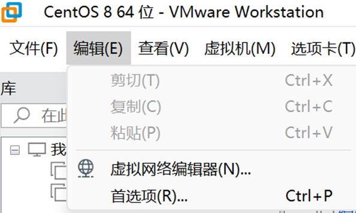
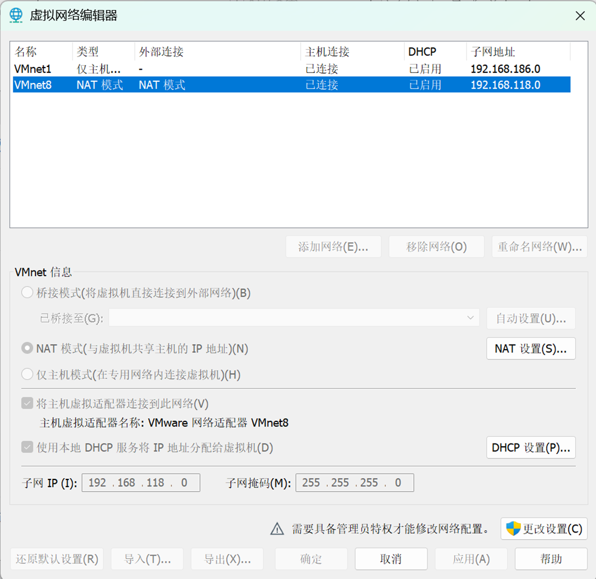
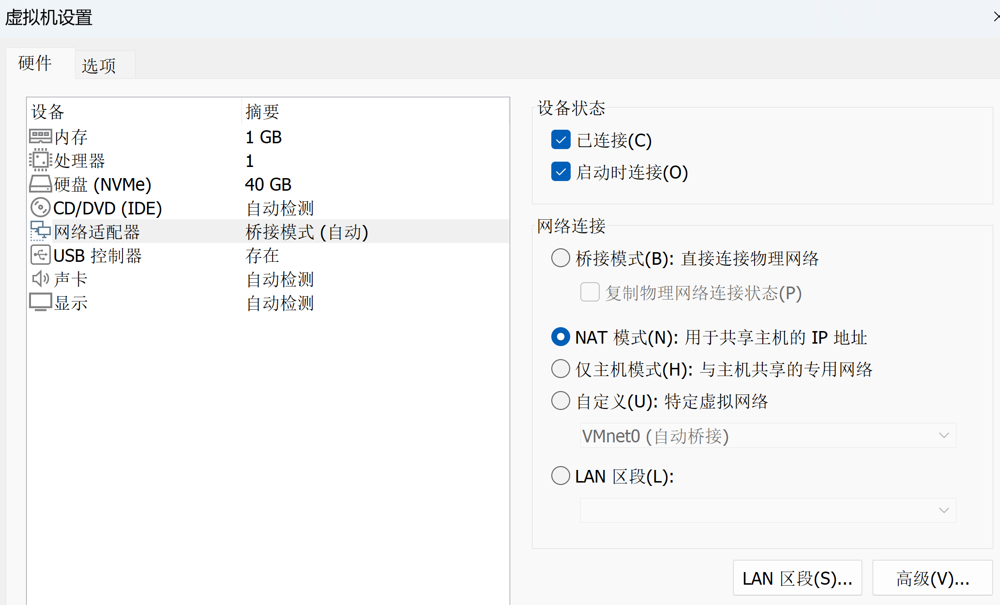
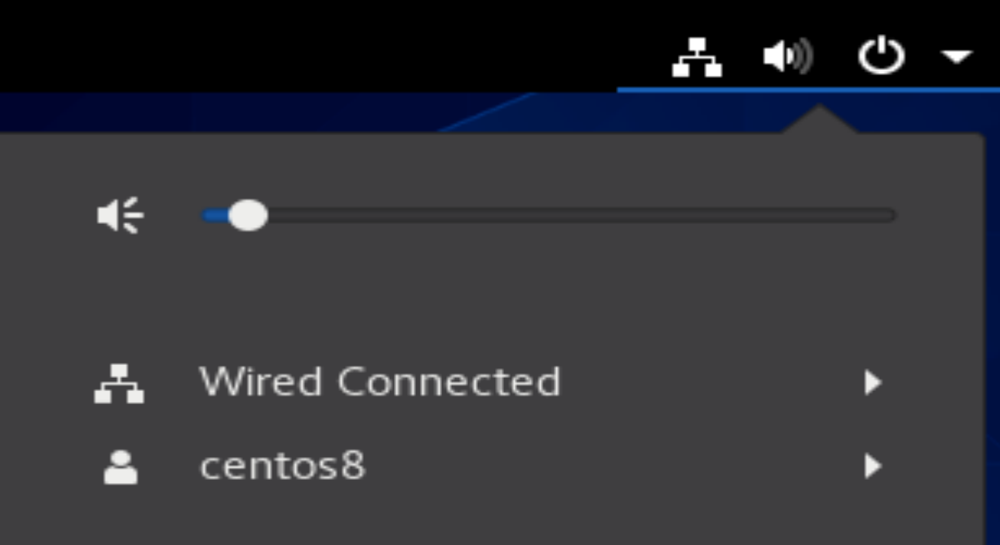

熟悉linux系统界面和基本操作
打开虚拟机软件VMWare Workstation，找到已安装的操作系统CentOS 8，并启动。（弹出提示窗口时，请选择“我已复制了虚拟机”选项）。
等待CentOS 8系统启动完成后，登录到系统中。用户名是默认的lenovo，密码是123456。(如果不显示密码界面，请按下空格下激活登录界面)。
熟悉Linux系统的基本界面和操作。
左上方的活动按钮可以打开应用程序菜单，显示系统中安装的应用程序和工具。
右上方的系统状态栏显示当前时间、电池状态、网络连接等信息。点击系统状态栏可以访问系统设置和其他功能。
请找到以下应用程序并打开它们：
- 终端（Terminal）：这是一个命令行界面，可以输入Linux命令进行操作。
- 文件管理器（Files）：这是一个图形界面工具，可以浏览和管理文件和目录。
- 文本编辑器（Text Editor）：这是一个简单的文本编辑工具，可以创建和编辑文本文件。
- Firefox浏览器：这是一个网络浏览器，可以访问互联网。
网络连接
注意，首先确保宿主操作系统（也就是Windows操作系统）已连接到网络。
VMware Workstation网络设置
在VMWare Workstation软件中，顶部菜单栏找到“编辑”->"虚拟网络编辑器"，在弹出的窗口中点击“添加网络”，选择VMNet8，点击“确定”完成添加。
如果“添加网络”按钮不可用，请先点击“更改设置”按钮，输入管理员密码后再进行添加。

在“虚拟网络编辑器”窗口中，选择刚才添加的网络VMNet8，将“连接类型”设置为“NAT”，点击“确定”保存设置。
在子网设置中，确保子网IP地址和子网掩码设置正确，例如：
- 子网IP地址：192.168.118.0
- 子网掩码：255.255.255.0

- 在VMWare Workstation软件中，顶部菜单栏找到“虚拟机”->“设置”，将“网络适配器”的“网络连接”设置为NAS模式。

虚拟机CentOS 8网络设置
- 进入CentOS系统，在右上角的系统状态栏中，点击网络图标，查看当前的网络连接状态。当出现“已连接（Wired Connected）”状态时，说明网络连接成功。可以尝试打开Firefox浏览器，访问一个网站（例如www.baidu.com）来验证网络连接是否正常。

使用终端练习文件基本操作
请下载该文件，basic-file.sh
接下来打开终端，执行以下命令:
cd /home/lenovo # 当打开终端时，默认位置就是/home/lenovo目录，可以直接执行以下命令
mv 下载/basic-file.sh . # 将下载的文件移动到当前目录
chmod +x basic-file.sh # 给文件添加可执行权限
./basic-file.sh # 执行脚本
该脚本将创建一个名为“basic-file-command”的目录。可以使用文件管理器浏览到该目录，查看文件内容如何随着练习的进程而发生变化。
注意：如果提示没有权限，可以通过添加sudo命令来提升权限：
sudo ./basic-file.sh
当提示输入密码的时候，请输入123456（注意输入密码时不会显示任何字符）。